UX review · Lor private beta · November 2026
Showing the research loop to the person steering it
A review of Lor's current interface and a proposed direction for how it shows running work, decisions, compute and cost to one researcher directing many agents.
Summary
The loop runs well. The interface doesn't yet show where it stands.
Mirendil's bet is that the research loop is the product. Agents write code, run experiments, bring up their own machines and unblock themselves, while people make the two calls agents can't: what to try, and what to trust. In the beta, the loop itself works. The agents plan, fix their own harness bugs, provision GPUs, report spend and recommend next steps.
What's missing is a view of the loop from the researcher's side. To learn what was running, what was waiting on me, what it had cost and where a number came from, I had to ask the agent or dig through Settings. Those answers should be on screen without asking, at the scale Lor is built for: a hundred agents on one task, finished while you were away. The proposals below reorganize Lor around those two calls, without changing its visual language.
- Give cross-session work one home, called Lab.It replaces Omni Agent and is reachable from the sidebar, from ⌘K with Tab, and from a small dock on any screen.
- Put status and attention on screen all the time.One live line in the sidebar, a queue of decisions waiting on you, and one Activity list that separates what agents fixed on their own from what needs you, with Stop on every fan-out.
- Make decisions actionable.When the agent asks you to choose, show the options as a card with cost, budget left and a button for each.
- Set guardrails when work starts.Example prompts at Lor's real scale, plus project, default machine, budget and GPU policy in the composer.
- Oversee compute instead of provisioning it.Agents bring machines up and release them. Machines and Spend become tabs of Lab that show what they used and set the rules they work within.
Context
What Lor is for
Mirendil describes itself as a frontier lab rebuilt around AI research and development. Lor is the environment where that work happens. The claims that matter for the interface:
“The loop is the product.”Kleiner Perkins on Mirendil's thesis
“People make the calls: what to try, and what to trust.”Mirendil, Meet Lor
“No cloud account. No setup.”Mirendil, Meet Lor, on Lor's built-in compute
Fern was “built by one researcher working with agents in 3.5 months.”mirendil.com
Meet Lor makes the split explicit. Agents do the work, including setting up and releasing their own machines, and can run by the hundred: one example sends 102 agents to build environments from 100 PyTorch PRs in about eight minutes each. People decide what to try and what to trust, and keep up from anywhere, including a phone. That gives the interface three jobs, and I used them as the lenses for every finding and proposal.
What to try
Put the decisions only a person can make in front of them, with cost and options, across every session.
What to trust
Let them check any result or claim against the run, trace or file that produced it.
Keeping up
Show what's running, what agents fixed on their own and what it costs, on a laptop or a phone, without asking.
Method
How I reviewed
- Used Lor across six chats in three projects (ARC-AGI, fine-tuning and interpretability, and an org-simulation research thread), including a distillation run with GPU provisioning.
- Walked through Compute, Settings, Sandboxes, Billing and Usage in the live app and captured each screen.
- Rebuilt the current screens from measured screenshots (sidebar rows on a 28.25pt pitch, 616pt chat column, #191919 ground) so proposals could be compared with Lor like for like.
- Checked each issue against Nielsen's ten heuristics and common UX laws, and rated severity by its effect on the three lenses.
- Re-read the proposals against Mirendil's Meet Lor post and adjusted them where Lor's intent differed from my assumptions, mainly on compute.
Severity. High blocks one of the three jobs. Medium slows it down or misleads. Low is polish.
Proposed screens are mockups on Lor's own chrome. Example runs and timings are illustrative, and prices I couldn't see are left out rather than guessed.
Findings
Where the current interface falls short
Entry points and naming
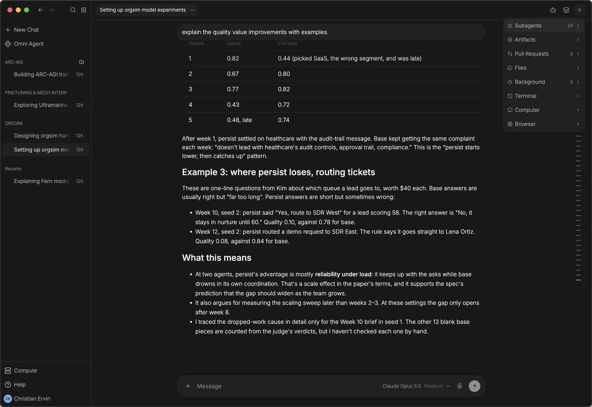
- Medium
Omni Agent sits under New Chat but works across every session. Placed next to New Chat it reads as another kind of chat, not a view across all of them, and the name doesn't say what it covers.
- Medium
Three features share one word. "Compute" (left nav) shows cluster availability, "Computer" in the + menu is a remote desktop, and "Lor Computer" in Settings is the cloud sandbox. The terminal names that sandbox
lor-b7f7…. - Low
Header icons have no labels, and two of the three repeat items already in the + menu.
Seeing what's running
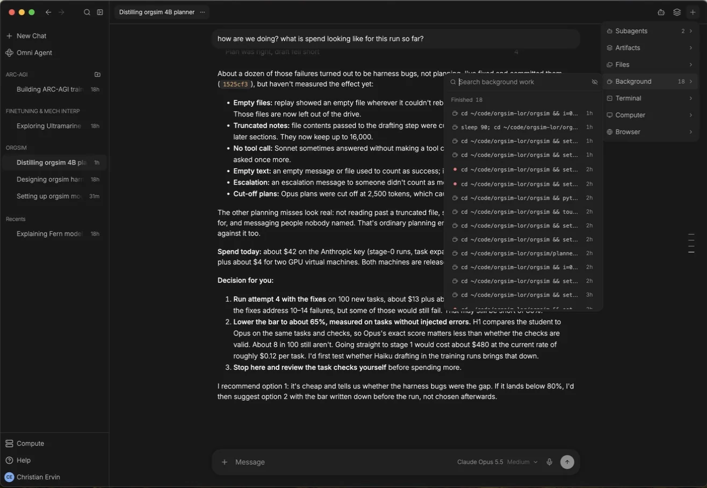
cd ~/code/orgsim-lor/orgsim &&, so truncation hides the part that differs.- High
There is no view of what's live. Subagents shows only a Finished group, and Background is a separate list in a different menu. Neither shows cost, duration or outcome, and there's no way to stop a group of agents at once. At a hundred agents per task, that list is the main way to keep up.
- Medium
A red dot can't say whether it matters. Two background rows and a subagent row carry a red dot with no legend and no exit code. Lor's agents retry and unblock themselves, so many of these failures are already handled. The interface should say which ones were and which still need a person.
- Low
Sidebar times don't separate chats. Most rows read 12h or 18h whatever their state, and nothing marks a chat that is running or waiting.
Steering decisions
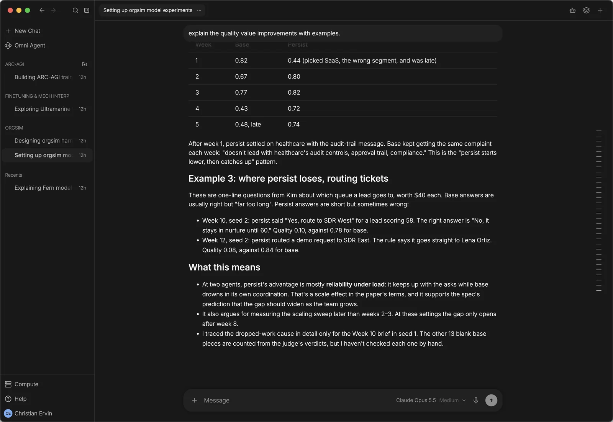
- High
Spend decisions are prose. The agent ended a run with "Decision for you" and three numbered options costing about $16 to about $480. Choosing means typing a reply. There's no budget context and nothing records which option was chosen.
- High
To learn what a run cost, I had to ask. "What is spend looking like for this run?" got a hand-built table ($28.87 in models). The product has the data in Usage but doesn't show it in the session.
- Medium
Claims don't link to evidence. "Week 10, seed 2 … Quality 0.10" has no link to the trace. The agent notes it hasn't checked 13 cases by hand, and there's no route for me to check them.
- Low
The sticky question overlaps content, cutting the table header in half.
Compute and cost
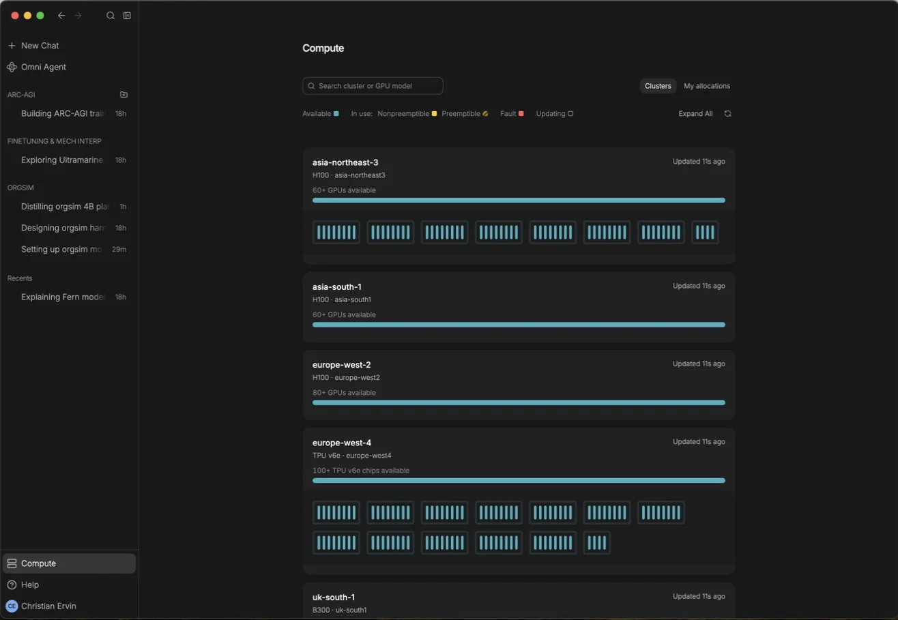
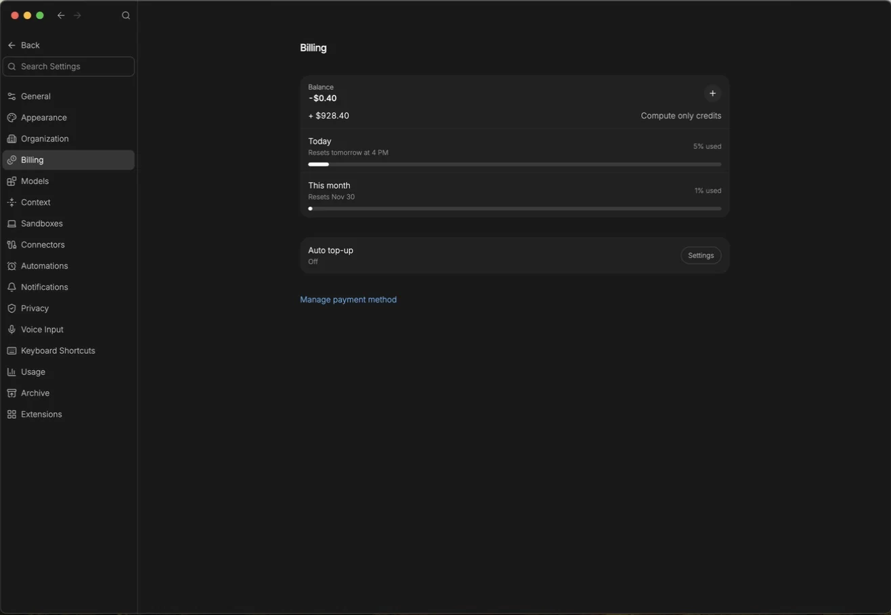
- High
Agent-provisioned machines leave no trace. Bringing up and releasing nodes is the agent's job, and it did this well: two GPU VMs in one session, both released. My allocations then read "No active jobs or GPU instances", and the only record was a sentence in the chat. If agents provision, the person needs the record and the rules, not the controls.
- Medium
Cost lives two levels deep in Settings, split three ways. Billing shows percentages, Usage shows model spend ($278.28) and VM spend ($71.53, estimated) in separate tables, and nothing breaks spend down by chat or project.
- Medium
The negative balance is unexplained. With $928 in compute-only credits, it isn't clear what the −$0.40 covers or what happens next. "Resets 4 PM" is midnight UTC, which only the Usage page explains.
Workspace
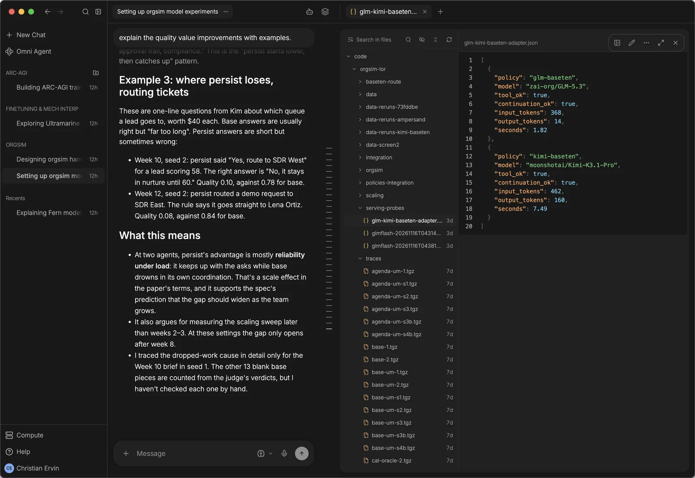
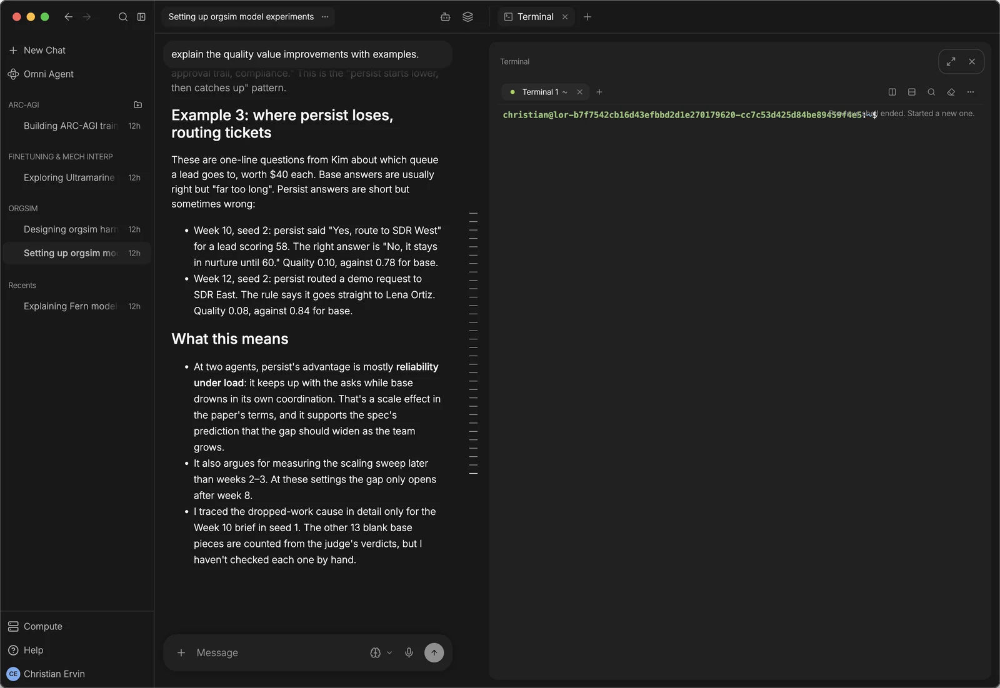
- Medium
Local and cloud look identical. The tree root is
codeand the prompt ischristian@lor-b7f7542cb16d…. The friendly name "Lor Computer" exists only in Settings. - Medium
A shell restart is silent. "Previous shell ended. Started a new one." appears once, on top of the prompt, with no reason or saved output.
- Low
Truncation hides the differing part.
glmflash-20261116T04314…andglmflash-20261116T04381…differ only after the cut. Files show "3d" with no size, and nothing says which agent wrote them.
What already works
- The new-chat composer names the machine and folder before the first message.
- Agents provision, release and recover on their own. The proposals build on that rather than adding manual controls.
- The agents' writing is clear and candid about uncertainty, which makes the trust work above easy to build on.
- Usage has good raw data: spend by model, cache hit rate, GPU-hours by type.
- ⌘K already has scopes, recent chats and "open beside".
- The visual language is quiet and consistent. Every proposal below reuses it.
Proposal 1
A home for cross-session work
A researcher running many agents needs a place that sees all of them. Omni Agent gestures at that, but as a chat entity next to New Chat. I propose one concept, Lab, with three ways in.
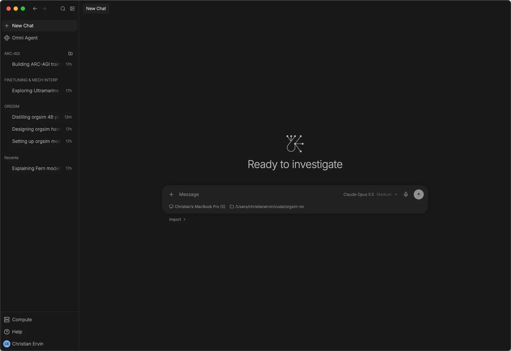
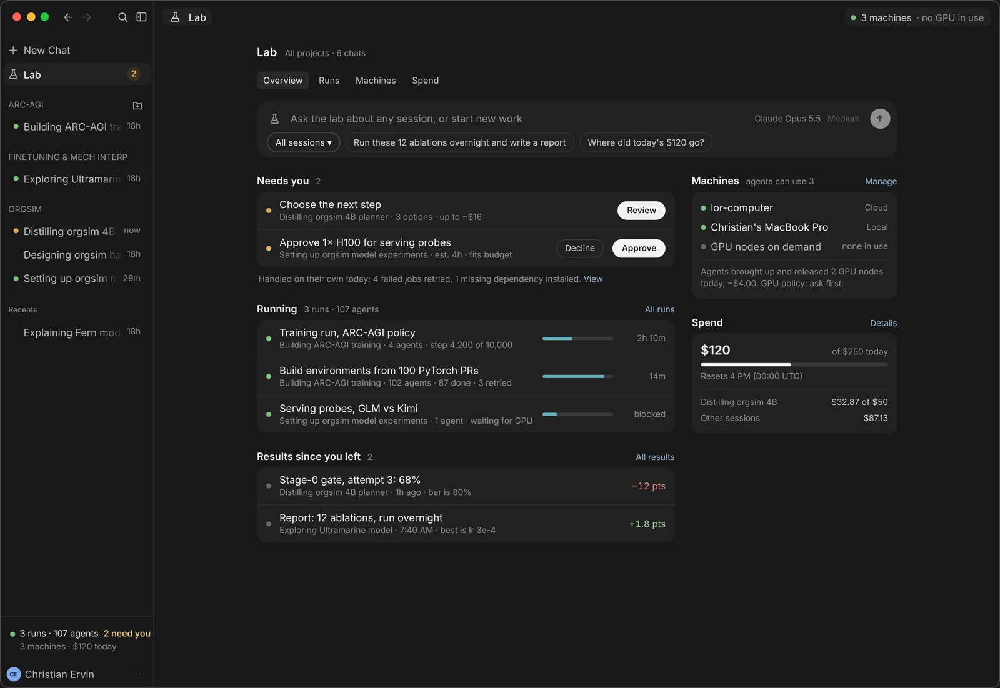
Three entry points, one concept
Lab as a destination
A sidebar row with a count of items that need you. The page combines a persistent cross-session conversation with an overview of all work.
⌘K, Tab to ask
Type in the palette; press Tab to send the query to Lab instead of searching. Suggestions follow the current session.
A dock on every screen
A minimized "Ask the lab" pill in the corner, with prompts for the screen you're on. Expands into a small panel.
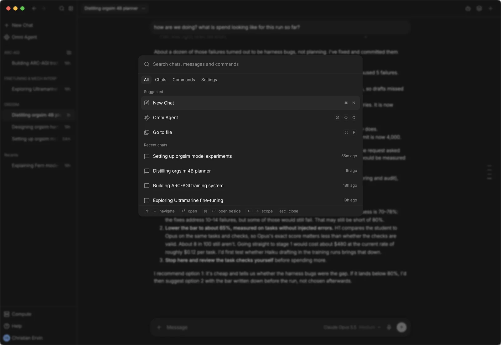
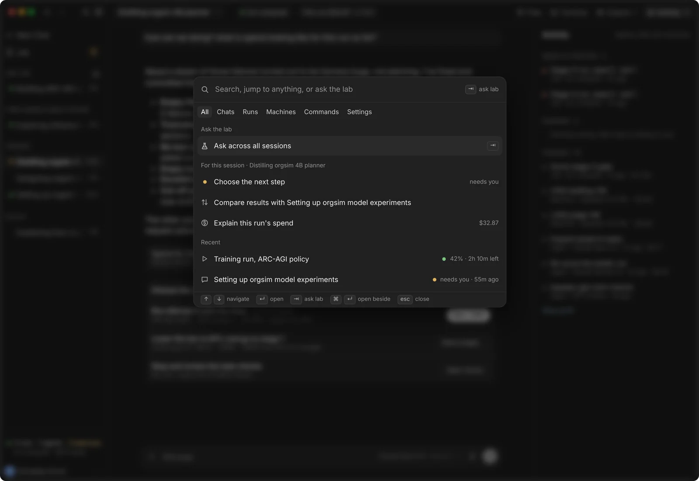
Naming
| Name | What it suggests | Trade-off |
|---|---|---|
| Lab | A place where all the work happens; matches Mirendil's own language | Short and ownable; needs one line of onboarding to say it's also a conversation |
| Global session | A session like the others, scoped to everything | Literal and accurate; reads as a technical setting |
| Persistent chat | A conversation that never ends | Explains persistence; leaves out the overview |
| Omni Agent (today) | A separate, more powerful agent | Entity framing, so people expect a different model, not a wider view |
Proposal 2
Status and attention, always on screen
With hundreds of agents, the scarce resource is the researcher's attention. The interface should route it: show what needs a person first, show what agents already recovered from so it doesn't read as failure, keep the rest visible but quiet, and never require polling.
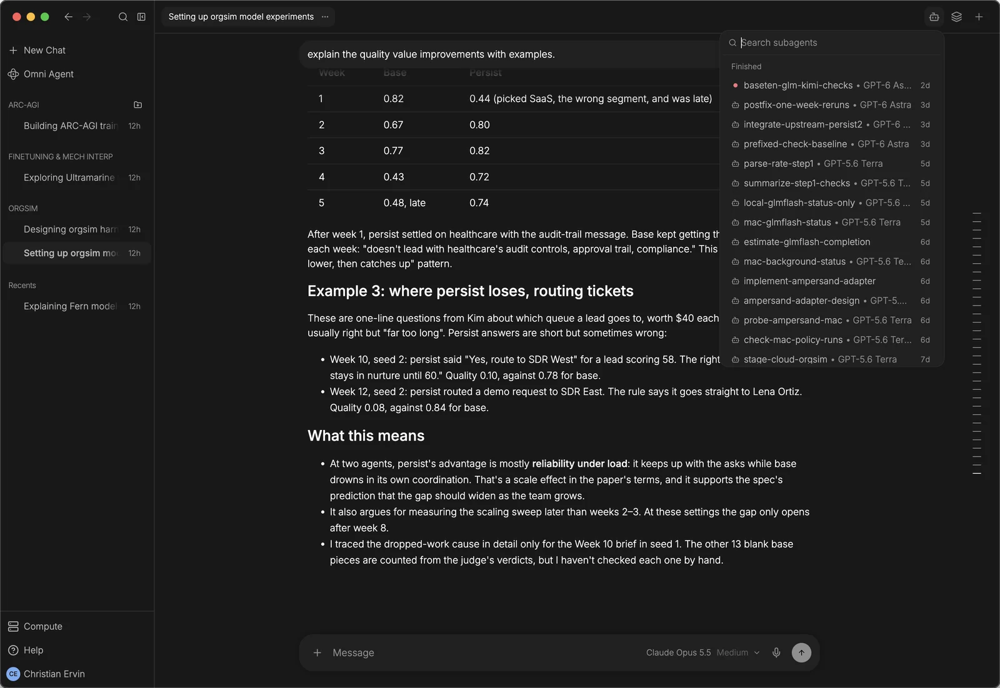
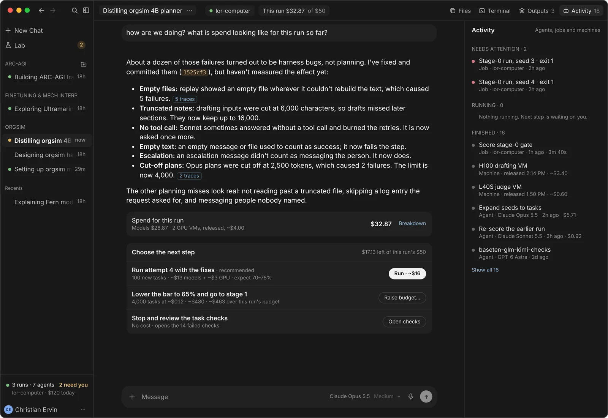
Sidebar status line
"3 runs · 107 agents · 2 need you" replaces the footer stack of Compute, Help and a spend widget. One line, always visible, opens Lab. Each chat gets a dot: running, needs you, or idle.
Needs-you queue
Decisions and approvals from every session, at the top of Lab with inline actions. Amber is used only for this.
Fan-outs as one row
Subagents and Background become one list. A task run by many agents collapses to one row with done, running and retried counts, and Stop for the group.
Recovered apart from needs you
Retries and fixed dependencies are listed as handled, with exit codes. Only what an agent couldn't resolve turns amber.
Why not lead with spend? Spend matters, but it's a consequence of the work. Leading with it would make the sidebar a meter. Running work and decisions come first; spend stays one tap away and appears wherever money is about to be committed.
Proposal 3
Decisions you can act on
Structured choices
When the agent proposes options, render them as a card. One click chooses, and the choice is recorded in the run history.
Cost and budget beside each option
"Run · ~$16" next to "$17.13 left of this run's $50". Options over budget offer to raise it rather than failing later.
Spend in the session
A run summary ($28.87 models, ~$4.00 GPU) with a link to the full breakdown. No need to ask.
Claims link to evidence
"5 traces" beside "5 failures". Hover shows the source row or judge verdict.
Proposal 4
Guardrails when work starts
Today's composer already names the machine and folder, which is the right instinct. Extend it with the decisions that are expensive to reverse later, and show new users what Lor is for with Mirendil's own example prompts: overnight ablations, a repo-wide security audit with a PR per fix, reproducing a paper's table on 8 GPUs.
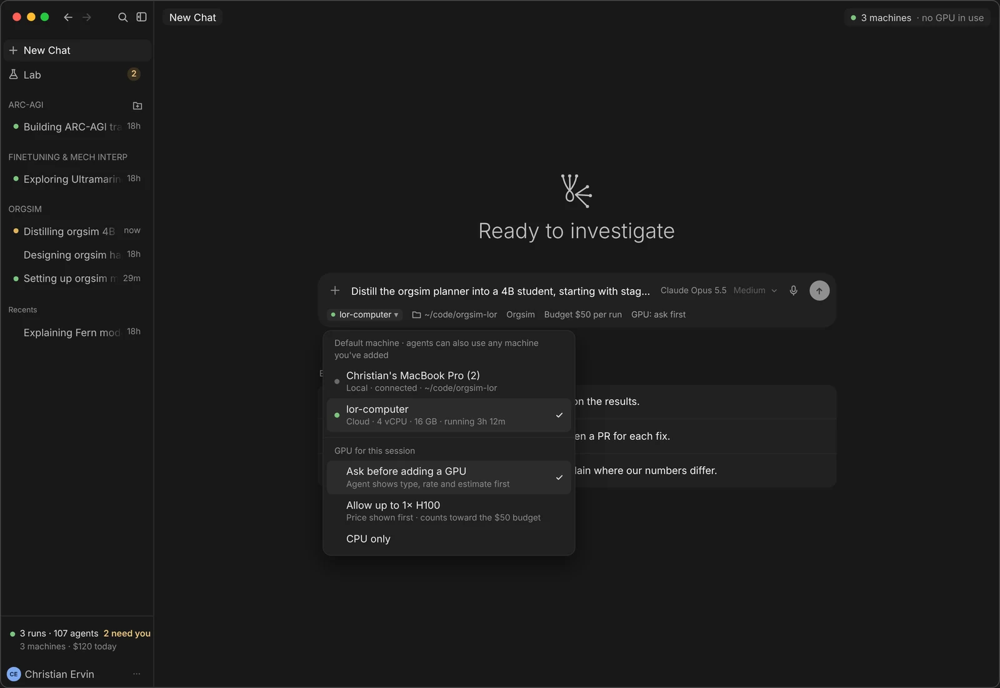
GPU policy options
Ask before adding a GPU
The agent proposes type, price and estimate; you approve inline, from Lab or from your phone.
Allow up to a limit
e.g. up to 1× H100 within the session budget. Fewer interruptions overnight.
CPU only
No GPU spend at all; the agent says when a task would need one.
Proposal 5
Oversee compute instead of provisioning it
Lor comes with its own compute, and agents request, set up and release nodes themselves. So the Machines view shouldn't be a provisioning console. It should show what agents used, what it cost and which chat it served, and hold the rules they work within. Machines and Spend become tabs of Lab, next to the runs that use them. Payment details stay in Settings › Billing.
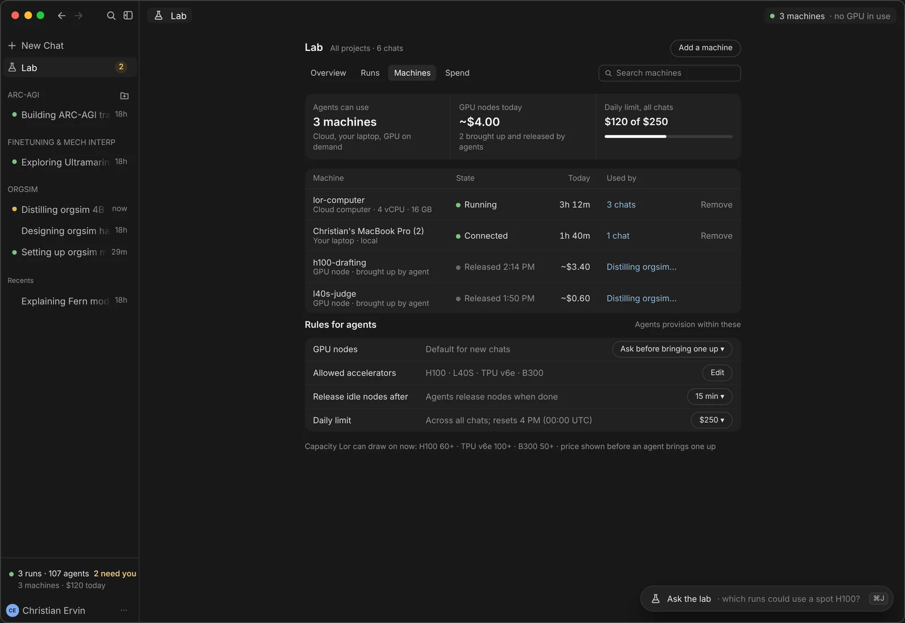
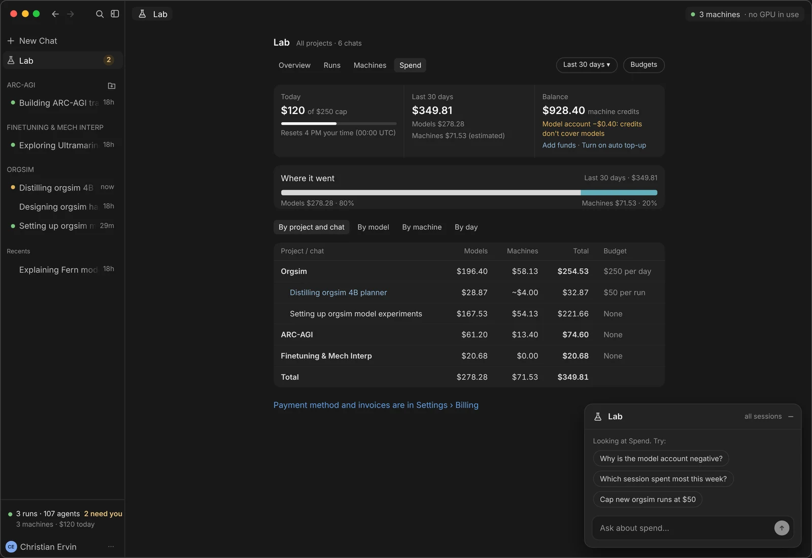
Rules for agents
Rules on the Machines tab
GPU policy, allowed accelerators, idle release and a daily limit, in one place, applied to every chat unless the composer overrides them.
Manual request flow
A Request button on capacity rows, so people bring up nodes themselves.
Per-chat approval only
Agents ask in each chat before every GPU.
Where spend should live
A Lab tab
Close to the work, one click from the sidebar status line.
Settings only
Billing and Usage stay where they are.
Sidebar widget
A persistent spend meter in the sidebar footer.
Proposal 6
A workspace that says where it is
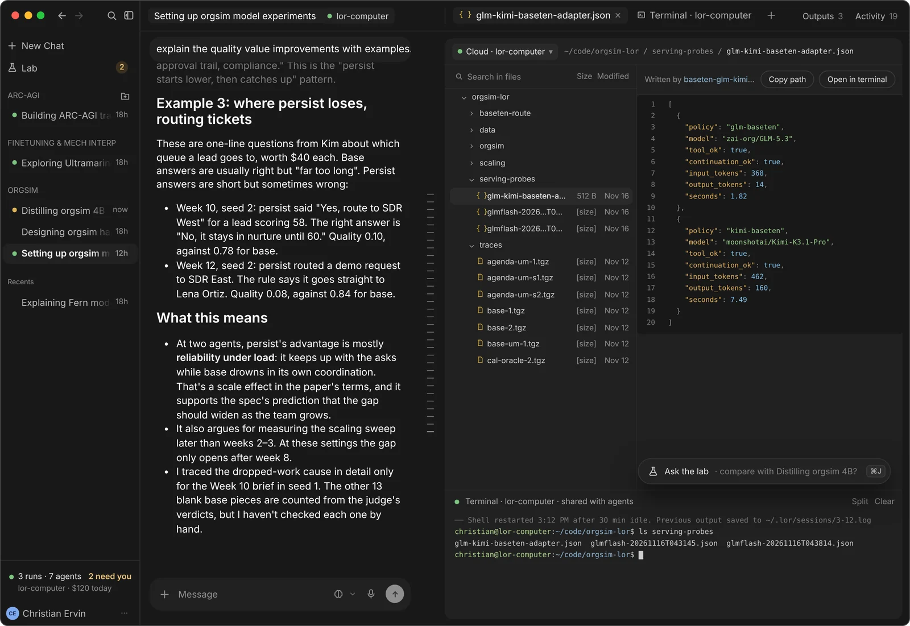
Name machines once, use the name everywhere
lor-computer in the badge, tab, prompt and Lab. The full ID moves to a tooltip.
Provenance on every file
"Written by baseten-glm-kimi-checks" links back to the agent and message.
Truncate in the middle
glmflash-2026…T043145.json keeps the part that differs.
Shell lifecycle in the scrollback
Restarts state the reason and where the previous output was saved.
Principles
How the proposals map to heuristics
| Nielsen heuristic | Today | Proposed |
|---|---|---|
| Visibility of system status | No live view; spend learned by asking | Status line, Activity rail, progress and time left on runs |
| Match the real world | Omni Agent; three "Compute"s; hashed hostnames | Lab, runs, machines with names |
| User control and freedom | Choices typed as replies; no way to stop a group of agents | Approve and decline beside the decision; Stop and Stop all on every fan-out |
| Consistency and standards | Subagents and Background as separate lists | One Activity concept; Lab tabs |
| Error prevention | GPU spend discovered after the fact | GPU policy and run budget set up front |
| Recognition over recall | Unlabeled icons; cost two levels deep | Labeled controls; contextual ⌘K and dock prompts |
| Flexibility and efficiency | ⌘K for navigation | ⌘K Tab to ask Lab; ⌘J for the dock |
| Aesthetic and minimalist design | Footer stack; overlapping sticky bubble | One status line; no overlaps |
| Recognize and recover from errors | Red dots without legend | Recovered on its own listed apart from Needs you, with exit codes |
| Help and documentation | Help in the footer | Help in ⌘K and the account menu |
| UX law | Applied as |
|---|---|
| Hick's law | Two top-level choices in the sidebar: New Chat or Lab. The + menu's eight items regroup by kind. |
| Fitts's law | Decision buttons sit inside the decision, not in a reply box or menu. |
| Jakob's law | ⌘K and Tab-to-ask behave like other Mac tools researchers already use. |
| Zeigarnik effect | Open loops (needs you, running) lead the Lab page and the Activity rail. |
| Goal-gradient effect | Progress bars and time left on every run. |
| Von Restorff effect | Amber is reserved for "needs you"; everything else stays neutral. |
| Proximity and common region | Compute and spend grouped under Lab, next to the work they serve. |
| Doherty threshold | Live counts keep the system feeling responsive between long agent turns. |
| Tesler's law | Agents carry provisioning and recovery. People carry the rules and the calls on what to try and what to trust. |
Sequencing
Where to start
Quick wins days
- Label header icons; keep the model name visible in narrow layouts.
- Fix the sticky question and terminal status overlaps.
- Show the sandbox's name in the terminal prompt, tab and file tree.
- Middle-truncate file names; add size and modified columns.
- Show dollars next to Billing's percentages; explain the UTC reset.
Larger changes weeks
- Lab: overview page, persistent session, ⌘K Tab, dock.
- One Activity model for agents, jobs and machines, with cost, fan-out rows and Stop.
- Structured decision cards, recorded in run history.
- Machines and Spend under Lab, with a record of agent-provisioned nodes and rules for agents.
- Provenance links from claims to traces and verdicts.
Open questions
What I couldn't see from the outside
- Is per-run and per-chat cost available in real time, or only in the daily Usage rollup?
- What does the phone app show today, and should Lab's overview be its home screen?
- Can agents emit decisions in a structured form the UI can render, or would the card need to be parsed from prose?
- When an agent brings up a GPU node, which limits does it already respect, and can people set them per project?
- Will teams share Lab, budgets and machines, or is Lor single-researcher for now?
- Is Omni Agent meant to be a distinct agent with its own model and memory, or a cross-session view? The naming proposal assumes the second.